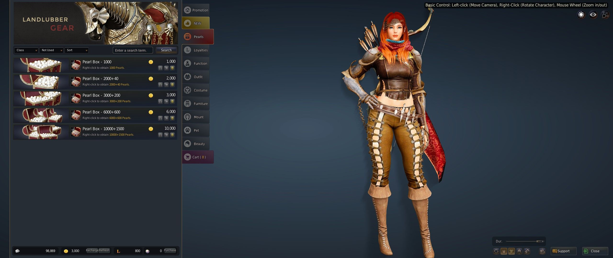
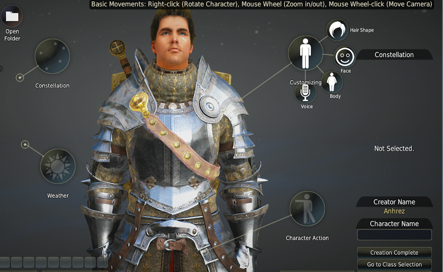

← Navigate here!
Black Desert Online is a sandbox-oriented massively multiplayer online role-playing game by Korean video game developer Pearl Abyss. The game has been in development since 2010, and entered closed beta testing in October 2013. Unlike most games in this genre, Black Desert Online includes many different activities to do when you are not killing monsters or doing quests. Some of them include using the completely community driven economy and marketplace, where players buy items that other players get from defeating bosses or through spending a lot of time on it, and the price of something goes up when something is bought, and the price is reduced when something is put onto the market, so the prices are very stable. For people who love to just fight monsters, the graphics of the game are very pleasing to look at and are very in depth, here are some examples:
Players can join up in guilds and fight with each other to own parts of the map. Another reason why this game is so popular is because there is no level limit, and as long as you keep playing, you can obtain more levels and become more powerful, and players are constantly fighting for the most of everything. While there may not be a "hard" level limit, there is a "soft" level limit, meaning that once you reach a certain level, it becomes much harder to level up, which is level 50. For example, an enemy that may give you 1% of the EXP needed to reach the next level if you are level 49, whereas at level 50 that enemy will only give you 0.05% of the EXP you need to level up. Here are some other activities you can do in this ever evolving world:
There is a wide range of classes in the game, to be able to fit any play style a player may have! Also, when you reach Level 56, which is much harder than it sounds, you may awaken, you able to show how strong you can become by becoming a god. Such classes are:
One of the best things that sets this game apart from other games like World of Warcraft is the price. Whereas World of Warcraft is subscription based where you have to pay 15$ dollars a month in order to access your account. And most MMO RPGs or Massively Multiplayer Online Role-Playing Games are free, but have in game rewards you can pay so you can get an unfair advantage. Althought I cannot deny Black Desert Online has a store you can buy from, however all these rewards you can buy using real money are all purely cosmetic, and do not give you any advantage over your friends and enemies, even your frenemies. Another thing that Black Desert online has above all other MMO RPGs is an extremely detailed character creation screen. The range of traits you can customize in your character makes for nearly enless possiblities, and you can make something to however you want it to be, like these:

If you wish to purchase this game for the very reasonable price of only $10 for a lifetime of playing with unlimited time. Then click on ------->this!<-------